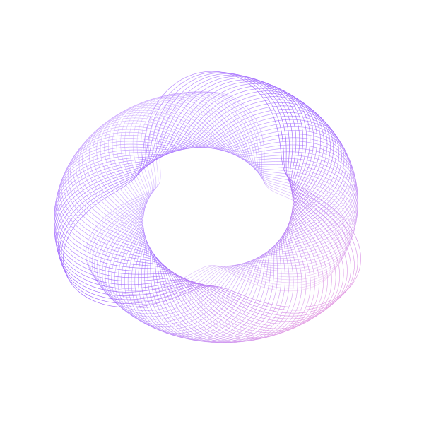

AI 投标合规审查
先测出问题，再修复模型的漏检。
在杭州契筑科技参与文档审查系统开发，负责完整性检查、合成数据评测与证据定位。
PythonFastAPILangGraphDeepSeekOCR
实习项目 · 展示工作与评测记录
TECHNICAL CONCEPT / 技术示意INSO.QIZHU / 01
628规则测试样本
24% → 50%缺席字段检出准确率
5OCR 引擎对比
AI Agent 与应用开发
DEVELOPER · BUILDER · EXPLORER

具体做了什么，
点开看看。
先测出问题，再修复模型的漏检。
在杭州契筑科技参与文档审查系统开发，负责完整性检查、合成数据评测与证据定位。
让推理容量在 Agent 之间流动。
基于 Agent Network 构建 P2P 推理容量银行，处理多智能体之间的算力错配。
组织四个人，把复杂方案讲清楚。
担任四人团队队长，围绕链上异动、资产风险与 Agent 决策展示搭建原型，团队获得武汉黑客松冠军。
从能源与动力工程，
走进 AI 与软件开发。
我是陈振邦，也叫因索 / Inso。目前在安徽建筑大学读本科，预计 2028 年毕业。通过自学、实习和独立项目，把代码写进实际的业务和产品里。
我关心模型哪里会出错，系统怎样更可靠；也喜欢进入现场，和不同的人一起把方案做出来。
“纵横家”是我给自己的一个提醒：看清局面，找到合适的人，把事情推进下去。
GITHUB / HYPERTENSION42 ↗LangGraph · DeepSeek · FastAPI · OCR · MediaPipe · SiliconFlow
Python · TypeScript · C · Vue 3 · NestJS · Express · PostgreSQL
Docker · Git · Linux · CI/CD · Claude Code
寻找 AI Agent / LLM 应用开发实习
上海 · 杭州 · 北京
Agent 应用、文档处理、全栈项目，
或者下一场黑客松。欢迎聊聊。